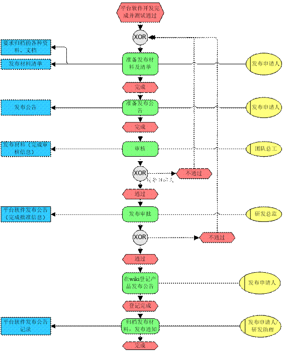

平台软件发布规范
版次：2020年07月30日 第3版
类型：程序文件
部门：软件部
上海维宏电子科技股份有限公司 版权所有
| 文件版本 | 修改前文件版本 | 主要修订内容和原因 | 修订人 | 修订日期 |
|---|---|---|---|---|
| R1 | 初版 | 汪腾霞 | 2016.08.17 | |
| R2 | R1 | 1、将“5 发布版撤销”中的涉及“撤销“二字的，都改为作废； 2、“发布公告收件人列表“中新增抄送：软件开发工程师，并将《【审批】平台软件发布公告（软件名称）-模板-Rn.oft》中的收件人更新成和规范中的一致； 3、相关文件存放路径更新成服务器路径一致； 4、在“流程详解”下的软件开发需提交的发布材料一栏，新增还需提交发布 checklist 表。 |
王娟娟 | 2017.8.1、2017.11.7 |
| R3 | R2 | 1、 修改“2 适用范围”内容：将“特别说明”中的软件版本说明放置“6 附录”中，并去掉“2 个及以上团队” 的要求。 2、 修改“3 职责”内容：去掉“软件部门经理”的职责，重新定义其他人员职责。 3、 修改“4 发布流程” 内容：去掉“软件部门经理”审核环节，修改各环节责任人以及环节要求，修改“发布公告范围”。 4、 发布材料中增加《XX 不兼容性分析报告》 5、 修改“5 发布版作废”内容：增加 wiki、Nuget 等作废要求。 6、 增加“6.2 发布材料归档位置”。 |
谷艳艳 | 2020.4.23、2020.7.30 |
1 目的
本规范用于规范软件平台团队软件发布的流程。
2 适用范围
本规范适用于以下情况：由软件平台开发且会交付给平台外部或内部其他团队使用的软件产品（以下称“平台软件”）。
3 流程涉及人员
3.1 发布申请人
- 负责平台软件发布材料的收集和整理。
- 负责平台软件发布材料清单的编制和修改。
- 负责平台软件发布公告的编制和修改。
- 在 wiki 中登记产品发布公告。
- 邮件发送发布通知。
3.2 团队总工
- 负责平台软件实现方案的审核。
- 负责平台软件发布材料内容的恰当性、完整性进行审核。
- 负责平台软件发布公告的审核。
3.3 研发总监
- 负责平台软件发布公告的批准。
3.4 研发助理
- 协助归档发布材料。
4 发布流程
4.1 流程图

图 1 发布流程图
4.2 流程详解
表 1 流程活动
| 序号 | 活动名称 | 活动描述 | 负责人 | 备注 |
|---|---|---|---|---|
| 1 | 准备发布材料及清单 | 整理、修订待发布产品（组件或库）相关材料及材料清单。 | 发布申请人 | 1. 待发布产品提测后，开发人员可提前开始准备发布材料； 2. 发布材料详见表 2 发布材料。 |
| 2 | 发布申请 | 待发布产品（组件或库）测试通过后，可提起发布申请，申请中需明确： 1) 待发布的相关材料； 2) 计划发布的范围。（根据发布对象涉及的团队确定） |
发布申请人 | 见表 3 发布公告范围 |
| 3 | 审核 | 对团队内提起的发布材料、清单及发布范围进行审核。 | 团队总工 | |
| 4 | 批准 | 对发布请求进行批准。 | 研发总监 | |
| 5 | 登记发布信息 | 将软件发布信息更新至团队的 MD wiki 中。 | 发布申请人 | 见表 2 发布材料 |
| 6 | 归档发布材料 | 将发布材料放置在各团队指定位置，具体见章节6.1。 | 发布申请人/研发助理 | 驱动与固件组的材料可以由研发助理协助归档。 |
| 7 | 发布通知 | 通过公司 Outlook 邮箱（外网）发送发布通知，将发布公告作为附件同时发送，需确保发送成功。 | 发布申请人 | 可视情况，增加其他的通知形式以便引起相关团队对发布信息的重视，比如 RTX、产品发布会等，由发布申请人决定。 |
表 2 发布材料
| 序号 | 发布材料 | 说明 | 备注 |
|---|---|---|---|
| 1 | 软件开发 | 功能规格书（软件名称） * | 针对本次维护或新增功能的软件功能规格书。 |
| 2 | 软件开发 | 设计说明书（软件名称） | 1) 对需求规格实现给出的设计方案； 2) 若需求简单，可不提供设计说明书(由团队总工指定是否需要设计说明书)。 |
| 3 | 软件开发 | 使用说明书（软件名称） | 1) 发布工具类软件时，提供工具的使用方法、使用要求；新增功能特性时，须完善已有的使用说明； 2) 发布代码库时，对代码库的变更及代码库的使用要求进行说明。 |
| 4 | 软件开发 | XX 不兼容分析报告 | 针对本次发布中不兼容的组件进行特别说明，主要包含：不兼容原因、造成的影响分析以及解决方案等。 |
| 5 | 软件开发 | 发布对象 * | 直接的开发产物，如代码库、工具或软件。 |
| 6 | 软件测试 | 测试用例（软件名称） | 计划用于软件测试的用例。 |
| 7 | 软件测试 | 测试执行记录（TFS ID） | 软件测试执行过程的记录，包括使用环境、输入和结论。 |
| 8 | 软件测试 | 测试总结报告（软件名称）\* | 针对本次软件测试情况的总结。 |
| 9 | 发布公告 | 发布公告内容 * | 发布公告中包含内容详见《平台软件-XX 发布公告-模板》 |
说明：表 2 发布材料中“*”标记项为必备项。
表 3 发布公告范围
| 涉及范围 | 默认通知人员 |
|---|---|
| 产品体系 | 产品线经理、产品线总工、产品线测试组长。 |
| 软件平台 | 总工、平台测试主管。 |
| 自动化 | 总工、部门经理、测试主管。 |
| 供应链 | 供应链总监、仓储部经理、品管部经理、品质工程主管。 |
| 物联网研发 | 研发中心主任。 |
| 固定抄送 | 司令部、研发总监、产品总监、软件部门经理、软件部测试主管、发布申请人。 |
说明：
以上表格中除“固定抄送”，其他为若有涉及才加入公告通知范围，比如金属切削产品部、激光加工产品部。
以上涉及团队有列出默认通知人员，若需通知其他相关人员需特别指出。
5 发布版作废
若已发布版本在使用过程中出现问题，经调查须立即终止该版本的使用，由发布方及时发起作废。作废动作包括：
向发布审批人发出作废申请，申请通过后通过邮件、RTX 等方式通知发布版的接收方和其他相关方，作废公告内容包括：作废项、作废原因、紧急应对措施；
将作废的软件\模块版本以及相关文档、资料标明作废处理：
1） 在 wiki 的发布公告以及其他相关资料中标记“作废”字样；
2） 若使用文档服务器管理存放发布版和相关资料，则在发布项名称上追加“作废”，并移至“作废”文件夹中；
3） 若使用 NuGget 服务器管理存放发布版和相关资料，则将作发布的作废版本进行删除，不允许再进行下载使用。
6 附录
6.1 版本使用说明
平台软件分 Alpha 版本、Beta 版本、Release 版本：
Alpha（α）版本：为内部调试、测试版，此版本为初步完成品。
Beta（β）版本：外部测试版，此版本消除了严重的错误，但还是存在一些缺陷，需经过大规模的发布测试来进一步消除。产品线拿到现场调试的软件至少是此版本。
Release（R）版本：最终完成版。
接收方不得私自使用 α 版作为发布版本。理论上 α 版不可流到客户现场，如有特殊情况，产线应收集相关风险，并承担风险造成的后果。
6.2 发布材料归档位置
| 团队 | 归档位置 |
|---|---|
| Phoenix | http://phoenix.weihong.com:90/#!docs/Public/Public.md |
| 驱动固件 | \\172.16.10.66\NWfile02\01.安全内网文件夹\01.研发部文件\02.受限文件\01.软件部\受控文件 |
| 运动控制算法 | \\172.16.10.66\NWfile02\01.安全内网文件夹\01.研发部文件\01.各组文件\12.运动控制算法平台\12.发布材料 |
| CAD | 172.16.10.101:8080/tfs/sp/cadcam/ |
| 其他 | 发布内容涉及研发体系以外人员如供应链，须在“\\172.16.1.111\05.研发部文件\产品文件”对应目录下创建相关文件夹并做材料归档 |
6.3 相关文件模板
《功能首字母-测试规格书-功能名-TFSID-姓名(通用)-Rn.xlt》
《测试总结报告(XXX)-模板-Rn.dot》
《平台软件-XX发布公告-模板-Rn.md》
《【审批】平台软件发布公告（软件名称）-模板-Rn.oft》
《使用说明书（软件名称）-模板-Rn.dot》
《平台软件发布登记表-模板-Rn.xlt》
《【审批】平台软件作废公告（软件名称）-模板-Rn.oft》
相关文件存放路径为：
外网路径：\172.16.1.111\01.各部门文件\B1.软件部\03.模板
内网路径： \172.16.10.88\01.部门共享\09.软件部\07.模板
编制：谷艳艳 审核：陈豫 批准：